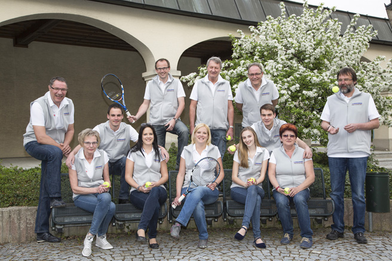
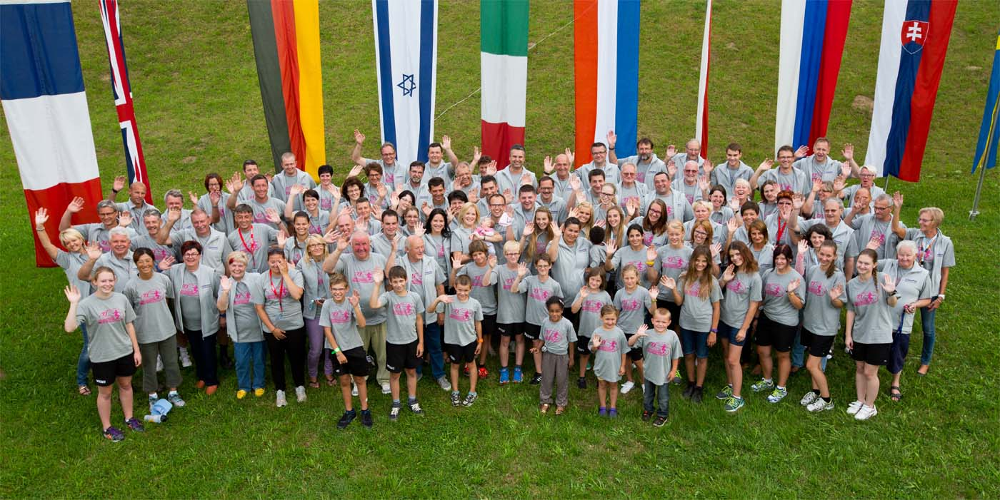

Verein Rollstuhltennis Austria

v.l.n.r. Gerold Scheidl, Heidi Scheidl, Philipp Dörre, Gisela Schöpke, Andreas Hauer, Angela Schöpke, Werner Pfitzner, Lea Bauer, Werner Fröhlich, Georg Süß, Maria Neuditschko, Rainer Steinberger
es fehlen: Silvia Eder, Lara Bauer, Franz Kurzmann, Herbert Mehofer
Mitarbeiter

Über 150 ehrenamtliche Mitarbeiter helfen jedes Jahr mit, die s Versicherung Austrian Open in Groß Siegharts zu veranstalten.
Rollstuhltennis
Rollstuhltennis hat sich in den letzten 30 Jahren zu einer attraktiven Sportart entwickelt und viel zur Integration und Anerkennung behinderter Menschen beigetragen.
Die Anfänge waren aber schwierig. Abgesehen davon, dass sich die zahlreichen Skeptiker nicht vorstellen konnten, dass man den Tennis-Sport im Rollstuhl überhaupt ausüben könnte, wollte man die Pioniere des Rollstuhltennis oft nicht die Tennisplätze betreten lassen. Vor allem in Europa, wo hauptsächlich auf Sand gespielt wird, argumentierte man, dass die Reifen der Sportrollstühle den Platz beschädigen könnten. In Groß Siegharts gab man sich dieser – mittlerweile als allgemein falsch angesehenen – Befürchtung nicht hin, und so gibt es bereits seit 1987 die stets international besetzten Austrian Open im Rollstuhltennis.
Gibt es Unterschiede zum „Fußgängertennis“? Abgesehen von geringfügigen schlagtechnischen Unterschieden, die sich durch das Sitzen im Rollstuhl ergeben, gibt es nur eine gravierende Abweichung bei den Regeln:
Im Rollstuhltennis darf der Ball zweimal aufspringen, bevor der Spieler den Ball schlägt. Der erste Aufsprung muss innerhalb des normalen Einzel- bzw. Doppel Spielfeldes erfolgen, der zweite darf auch außerhalb des Feldes sein. Je höher das spielerische Niveau des Sportlers ist, desto seltener lässt er den Ball aufspringen. Spitzenspieler retournieren mehr als 70 Prozent aller Bälle nach dem ersten Aufsprung.
Aufmerksame Beobachter werden festgestellt haben, dass sich die Rollstühle der Tennisspieler von normalen Rollstühlen unterscheiden. Die extrem schräg gestellten Räder erleichtern die Beweglichkeit, die zusätzliche Längsachse mit je einem kleinen Zusatzrad vorne und hinten verhindert ein Kippen oder Umfallen des Rollstuhls.
Im Jahr 1998 wurde der Rollstuhltennis-Sport in die Organisationsstrukturen des internationalen Tennisverbandes (ITF) eingegliedert. Weltweit werden bereits mehr als 170 Rollstuhltennis-Turniere veranstaltet, wo die Spieler, wie im normalen Tenniszirkus, um Weltranglistenpunkte und Preisgeld kämpfen. In Österreich finden 2 ITF Turniere statt.
Einzigartig im Behindertensport ist auch, dass es beim Rollstuhltennis – abgesehen vom Quad-Bewerb – keine Klassifizierung nach Behinderungsarten gibt. Im Quad-Bewerb starten Spieler, die zusätzlich an einem Arm behindert sind.